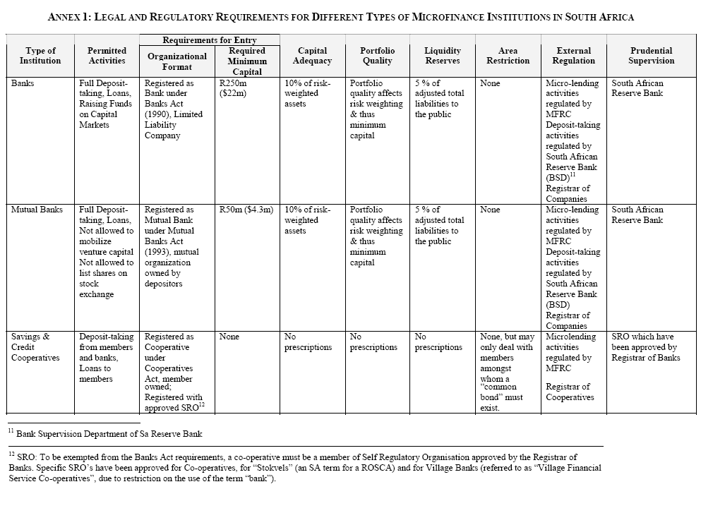

Understanding Bank Compliance
The legal and compliance framework in which Community Banks are rquired to operate is often quite intimidating. The following lists some of the key areas in which applicable legislation exists:
- Banking and credit services
- Insurance and related services
- Investment services
- Anti-money laundering & the detection and prevention of financial criminal activity
- Supervision
Clearly the consequences for non-compliance can range from a slap on the wrist by the regulator, to a hefty fine, end even to a jail term, and should not be taken lightly.
Many aspects of modern banking have been harmonnised, and issues such as card association compliance are almost identical in all jurisdictions, but this is not the case with the regulatory framework imposed by national government. We will deal only with South Africa in this version of the BIGBOOK.
South Africa
Credit unions are treated differently from Banks as determined in the Co-operative Banks Act and previously governed by the Cooperatives Act. Regulations proceeding from this Act have been published and may be gotten to via the the South African Reserve Bank's Cooperative Bank Supervision link.
Overview of Financial Sector Regulation

 Source: Thomas Glaessner Lead Financial Economist OPD et.al.
Banking and Credit Services
| Act/Bill | Details |
|---|---|
| Banks Act, [No. 94 of 1990] as amended | |
| Banks Amendment Act, [No. 19 of 2003] | |
| Home Loan and Mortgage Disclosure Act, [No. 63 of 2000] | |
| Bills of Exchange Amendment Act, [No. 56 of 2000] | |
| Currency and Exchanges Amendment Act ,[No. 23 of 1996] | |
| National Payment System Act, [No. 78 of 1998] as ammended | |
| National Payment System Amendment Act, [No. 22 of 2004] | |
| National Credit Act, [No. 34 of 2005] (now includes Usury regulation) | |
| National Credit Act Regulations [No. 8477 31 May 2006] | |
| Code of Conduct on Credit Extension, March 2007, The Banking Association South Africa | |
Retail Investment Services
| Act/Bill | Details |
|---|---|
| Collective Investment Schemes Control Act, [No. 45 of 2002] | |
| Financial Advisory and Intermediary Services Act, [No. 37 of 2002] | |
| Determination of Fit and Proper Requirements for Financial Services Providers [Board Notice 91, 16 August 2006] | |
Detection and prevention of unlawful activities
| Act/Bill | Details |
|---|---|
| Securities Services Act; [No 36 of 2004] | |
| Insider Trading Act, [No. 135 of 1998] - repealed | |
| Financial Intelligence Centre Act, [No. 38 of 2001] | |
| Prevention of Organised Crime Act, [No. 121 of 1998] | |
| Prevention of Organised Crime Amendment Act, [No. 24 of 1999] | |
| Prevention and Combating of Corrupt Activities Act, [No. 12 of 2004] |
Supervisory Organisations
| Organisation | Relevent Legislation |
|---|---|
| South African Reserve Bank |
|
| Financial Services Board |
|
| The National Credit Regulator |
|
| Financial exchanges (self-regulating organisations) |
|
| Other associated regulatory bodies |
|
| Coordination of financial regulation |
|
| Financial Markets Advisory Board (FMAB) est. 1990 |